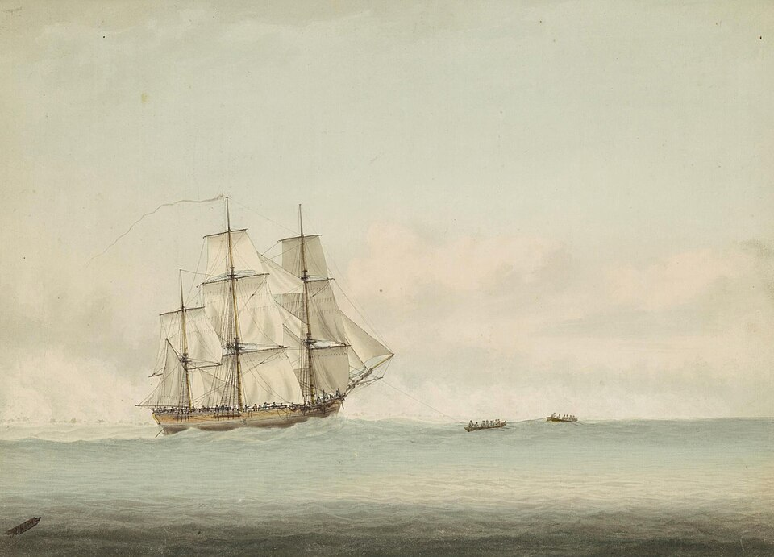
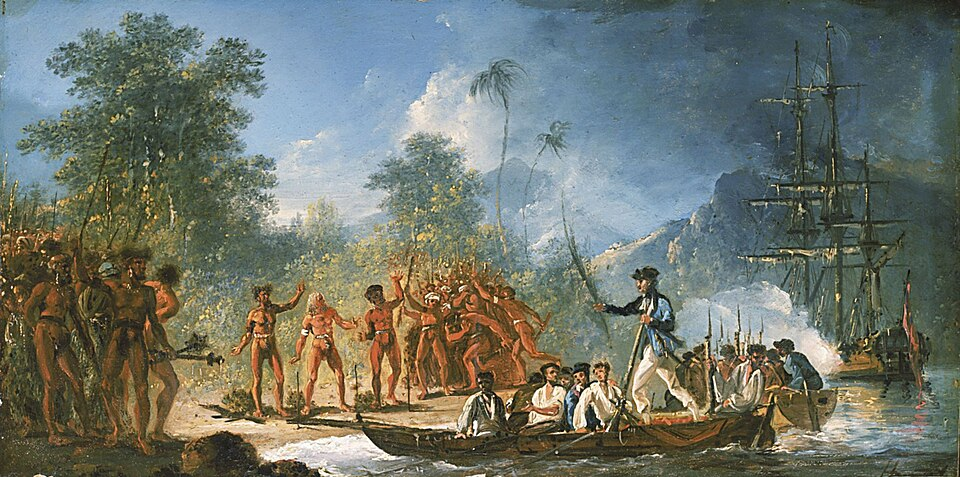
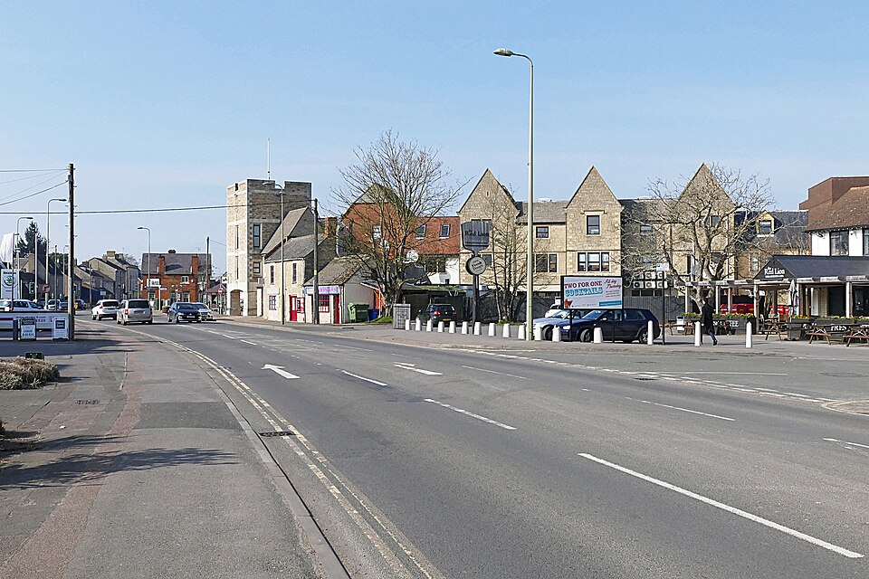
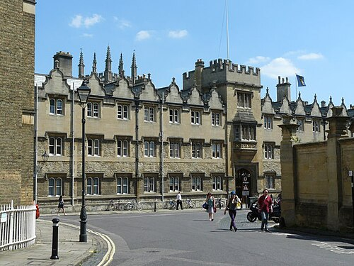
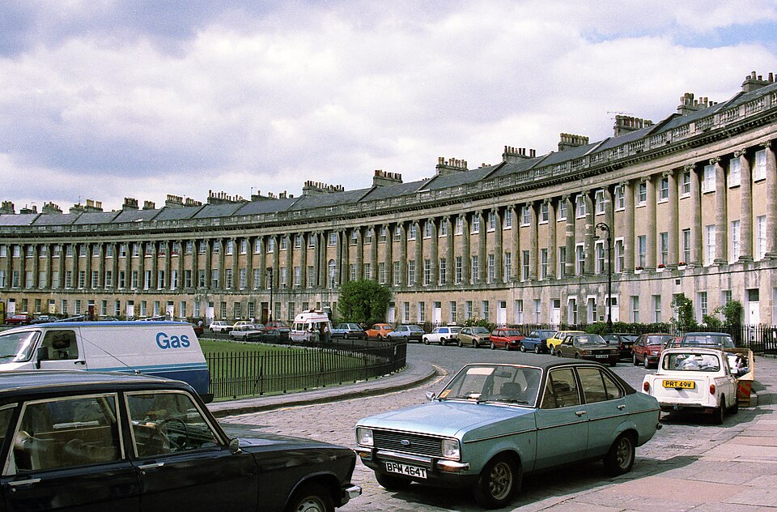

Роман · 1996
Смерть теперь моя соседка
Death Is Now My Neighbour — двенадцатый роман об инспекторе Морсе. Русское название рабочее.
- Первое издание
- Macmillan, Лондон, 24 сентября 1996
- Расследуют
- главный инспектор Морс и сержант Льюис
- Место
- Кидлингтон, колледж Лонсдейл, больница Джона Рэдклиффа
- Главное
- здесь впервые названо имя Морса
- Экранизация
- «Инспектор Морс», 19 ноября 1997; режиссёр Чарльз Бисон, сценарий Джулиана Митчелла
Завязка
19 февраля 1996 года, между семью и половиной восьмого утра, физиотерапевта Рейчел Джеймс, двадцати девяти лет, застреливают через опущенную штору кухонного окна в её доме в Кидлингтоне, на Блоксем-драйв, 17. Она готовила завтрак. Стреляли почти в упор из двора, из тяжёлого пистолета калибра .577. Соседи ничего не заметили, даже живущий через дом газетный репортёр Джеффри Оуэнс.
У Рейчел находят загадочное любовное стихотворение «семнадцатого века» Джона Уилмота, графа Рочестера, и фотографию, где она снята с седым мужчиной. Следы ведут в колледж Лонсдейл: там уходит в отставку глава колледжа сэр Кликсби Брим, и за его место борются Джулиан Сторрс и доктор Денис Корнфорд.
Эндевор
Этот роман знаменит прежде всего тем, что в нём наконец раскрыто имя Морса. Морс сам ставит себе диагноз — диабет, подтверждает его в поликлинике и на пять дней ложится в больницу Джона Рэдклиффа. Там за ним ухаживает сестра Дженет Маккуин, в которую он влюбляется. Она уговаривает его открыть Льюису своё имя и послать ему открытку, и Морс подписывает её полностью: Эндевор Морс.
Мать Морса была квакершей и держалась обычая давать детям «добродетельные» имена, а отец восхищался капитаном Куком. Так сын получил имя корабля «Индевор» («Старание»), на котором Кук в 1768–1771 годах совершил первое кругосветное плавание.




Развязку романа мы перескажем, когда сверим её по двум независимым источникам.
Люди
| Имя | Кто это |
|---|---|
| Рейчел Джеймс | Физиотерапевт, убита у себя на кухне. |
| Джеффри Оуэнс | Газетный репортёр, сосед. |
| Джулиан и Анджела Сторрс | Претендент на пост главы колледжа и его жена. |
| Денис и Шелли Корнфорд | Второй претендент и его жена. |
| Сэр Кликсби Брим | Уходящий глава Лонсдейла. |
| Сестра Дженет Маккуин | Медсестра, в которую влюбляется Морс. |
Места
| Место | Что там происходит | |
|---|---|---|
| Блоксем-драйв, Кидлингтон | в романе | Дом Рейчел. В сериале улицу снимали в Уэстон-Тервилле, Бакингемшир. |
| Колледж Лонсдейл | вымысел | Выборы главы колледжа. В сериале — Ориел и Брейзноуз. |
| Больница Джона Рэдклиффа | есть | Здесь лежит Морс. |
| Бат, Королевский полумесяц | есть | В сериале — поездка в Бат. |






Реалии
- Пистолет калибра .577
- Тяжёлый пистолет викторианской эпохи, так называемый «хауда»: такие британские офицеры в Индии брали на охоту на слонах на случай нападения тигра. Оружие редкое и коллекционное.
- Выборы главы колледжа
- Главу оксфордского колледжа избирают члены колледжа, и предвыборная борьба бывает беспощадной; Декстер возвращается к ней не впервые — вспомните «Загадку третьей мили».
- Граф Рочестер
- Джон Уилмот (1647–1680), придворный поэт Карла II, автор изящных и откровенно непристойных стихов.
- Диабет
- Для Морса, который много пьёт и курит, это серьёзный удар. Болезнь готовит финал цикла.
Книга и сериал
Фильм вышел 19 ноября 1997 года. В ролях: Джон Тоу, Кевин Уотли, Роджер Аллам (Денис Корнфорд — позже Аллам сыграет Фреда Терсдея в «Индеворе»), Ричард Брайерс (сэр Кликсби Брим), Мэгги Стид (Анджела Сторрс), Джон Шрапнел (Джулиан Сторрс; в радиопостановках он играл самого Морса), Марк Макганн (Джеффри Оуэнс), Джуди Лоу (Адель Сесил), Клэр Холман (Лора Хобсон).
- Больничной линии нет. Вместо сестры Маккуин возлюбленная Морса — Адель Сесил, соседка Рейчел.
- Имя Морс открывает Адели кроссвордной загадкой: анаграмма слов AROUND EVE даёт ENDEAVOUR.
- Тайное прошлое Анджелы Сторрс изменено; самоубийство Шелли Корнфорд стало падением с лестницы; в финале Морс заставляет сэра Кликсби уехать.
- Снимали в Ориеле и Брейзноузе, на площади Рэдклиффа, у церкви Святого Николая в Марстоне, в ресторане на Вальтон-стрит и у Королевского полумесяца в Бате.
- Музыка: ария Керубино «Non so più» из «Свадьбы Фигаро», фортепианный квартет соль минор Моцарта и «Глория» Вивальди.